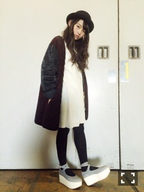

| 2015/01 23 Fri | ポップっていうコン プレックス。624回目 |
遅くなりました
パシフィコ横浜の個別握手会
の時の私服だよ〜

ポーラーハット NewEra
ニットワンピ KBF
アウター Santa Monica
靴 TOKYO BOPPER

ストール sunaokuwahara
ニット used
プリーツスカート HAIGHT & ASHBURY
このストールは乃木どこの
妄想企画で羽織ってたものです。
スカートのこの色、
好きじゃないはずなのに買った。
でもやたら使ってます。
明るい色味に挑戦したい。
付け襟と眼鏡だよ
たくさんの方が
来てくださって嬉しいです！
頑張ろうって思える
ことばをかけてくれてありがとう。
コメントもたくさんありがとう。
この一年で変わったのは
応援してくださる
みなさんのおかげです。
また変わり続けたい。
何もできなかったら悔しいから。
気負わずも、私らしく
いろんなことができたら
いいなと思っています。
CDTV
Rの法則
音楽の時間
MUSIC JAPAN
有難いことに
年明けからたくさんの番組
出させていただきました。
足りないところが見えてきます！
明日はいよいよ
「ニッポン放送 LIVE EXPO TOKYO 2015 ALL LIVE NIPPON VOL.3」！
大きなイベントにアンダーメンバー
だけで出るのは初めてなので
緊張します。
10枚目のアンダーメンバーでやる
最後のイベント。
ぜひたくさんの方に来てほしいです。
来てくれたみなさんの心に残る
ステージにできるように頑張ります！
次ののぎ天文芸サークル出るよ。
はい好きです楽しかったです
めえ
まりか
コメント(855)
2015/01/23 23:24